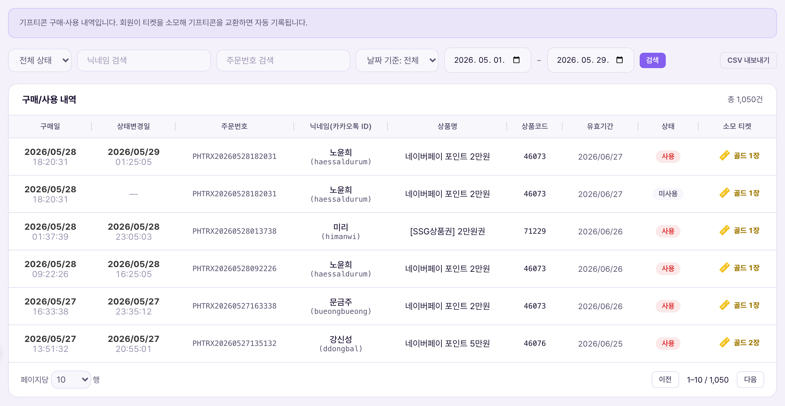

그룹Nhóm: 기프티콘 관리Quản lý gifticon
작성됨Đã viết
작성Viết bởi: 2026.07.22 (Dispatch B)
근거Căn cứ: 마스터 정책서(교환·등급) · CMS 데모 실측Tài liệu chính sách gốc (đổi·hạng) · đo thực tế CMS demo
1. 한 줄 정의1. Định nghĩa một dòng
구매/사용 내역은 회원이 보유 티켓을 소모해 기프티콘으로 교환한 모든 건을 조회하고, 필요 시 관리자가 개별 취소 처리하는 화면이다. "구매"라는 이름이 붙어 있지만 실제로는 돈을 내는 구매가 아니라 티켓 교환이다 — 정책서 상 "교환소"에서 일어나는 일이 여기 자동으로 기록된다.Lịch sử mua/dùng là màn tra cứu toàn bộ các lần hội viên tiêu vé để đổi lấy gifticon, và admin có thể hủy từng đơn khi cần. Tuy tên gọi có chữ "mua" nhưng thực chất không phải trả tiền mà là đổi vé — những gì xảy ra ở "cửa hàng đổi thưởng" theo tài liệu chính sách được tự động ghi lại ở đây.
2. CMS 화면 구성2. Cấu trúc màn hình CMS

실측 캡처 — 구매/사용 내역(2026-07-22, pricepick-demo.vercel.app/cms). 데모 데이터 6건 전부 "사용완료" 상태, 상품코드는 PP-XXXX-XXXX로 마스킹 표시됨Ảnh chụp thực tế — lịch sử mua/dùng (2026-07-22, pricepick-demo.vercel.app/cms). 6 dòng dữ liệu demo đều ở trạng thái "đã dùng", mã sản phẩm được che dạng PP-XXXX-XXXX
| 요소Thành phần | 의미Ý nghĩa | 바꾸면 생기는 일Điều gì xảy ra khi thay đổi |
|---|
| 구매일 / 상태변경일Ngày mua / Ngày đổi trạng thái | 교환이 일어난 날짜 / 상태(취소 등)가 바뀐 날짜Ngày diễn ra đổi thưởng / ngày trạng thái thay đổi (VD: hủy) | 읽기 전용 정보. 취소 처리 시 상태변경일이 자동으로 채워짐(추정)Chỉ mang tính thông tin. Ngày đổi trạng thái tự điền khi xử lý hủy (suy đoán) |
| 상품코드Mã sản phẩm | 실제 기프티콘 코드(보안상 PP-XXXX-XXXX로 마스킹)Mã gifticon thực (che dạng PP-XXXX-XXXX vì lý do bảo mật) | 목록에서는 항상 마스킹 상태다. 실제 코드 확인 방법(상세보기 유무)은 확인이 필요하다.Trên danh sách luôn ở trạng thái che. Cách xem mã thực (có màn chi tiết hay không) cần được xác nhận. |
| 상태Trạng thái | 사용완료 / 취소됨 2가지2 loại: đã dùng / đã hủy | 필터로 상태별 조회 가능. 상태 자체를 직접 바꾸는 UI는 없고, [취소] 버튼을 눌러야만 취소됨으로 전환Có thể lọc theo trạng thái. Không có UI đổi trực tiếp trạng thái, chỉ chuyển sang đã hủy khi bấm nút [Hủy] |
| [취소] 버튼Nút [Hủy] | 해당 건의 기프티콘 교환을 관리자 권한으로 강제 취소Hủy cưỡng chế đơn đổi gifticon đó bằng quyền admin | 클릭 시 확인창 노출 → 확인하면 상태가 "취소됨"으로 바뀌고 취소 내역에 새 행 생성, 소모했던 티켓 환불(3번 참조)Bấm sẽ hiện hộp xác nhận → xác nhận thì trạng thái đổi thành "đã hủy" và tạo dòng mới trong Lịch sử hủy, hoàn lại vé đã tiêu (xem mục 3) |
3. 취소 동작 — 실측 확인창 문구3. Hành vi hủy — nguyên văn hộp xác nhận đo thực tế
[취소] 버튼을 누르면 브라우저 확인창이 뜬다. 실제 노출 문구를 그대로 옮기면: "이 기프티콘 교환을 취소 처리할까요? 취소 내역에 기록됩니다."Bấm nút [Hủy] sẽ hiện hộp xác nhận của trình duyệt. Nguyên văn nội dung: "Bạn có muốn hủy đơn đổi gifticon này? Sẽ được ghi vào lịch sử hủy."
1관리자가
[취소] 클릭Admin bấm
[Hủy]
→
2확인창
"취소 처리할까요?"Hộp xác nhận
"Có muốn hủy?"
→
3이 화면 상태
→ 취소됨Trạng thái màn này
→ đã hủy
→
→
5소모 티켓
환불(추정)Hoàn vé
đã tiêu (suy đoán)
정책서와의 관계 — 유저 취소와 관리자 취소는 다른 경로Quan hệ với chính sách — hủy của user và hủy của admin là 2 đường khác nhau
마스터 정책서는 "교환 완료 후 취소 불가"를 명시한다(회원이 스스로 취소하는 기능은 없다는 뜻). 이 화면의 [취소] 버튼은 관리자가 CS·오류 대응 목적으로 강제 처리하는 별도 경로로 해석된다 — 정책서 위반이 아니라 예외 처리 경로다. 이 해석은 문서상 명시적으로 확인되지 않아 확인 필요로 남긴다.Tài liệu chính sách gốc ghi rõ "không thể hủy sau khi đổi xong" (nghĩa là hội viên không có tính năng tự hủy). Nút [Hủy] trên màn này được hiểu là đường xử lý cưỡng chế riêng của admin cho mục đích CS·khắc phục lỗi — không phải vi phạm chính sách mà là đường xử lý ngoại lệ. Cách hiểu này chưa được xác nhận rõ ràng trên văn bản nên để ở trạng thái cần xác nhận.4. 운영 시나리오4. Kịch bản vận hành
| 상황Tình huống | 운영자가 하는 일Việc Vận hành viên làm | 결과Kết quả |
|---|
| 상품 오등록·재고 소진Đăng sai sản phẩm·hết hàng | 해당 건 검색 → [취소] 클릭 → 확인Tìm đơn đó → bấm [Hủy] → xác nhận | 상태 "취소됨"으로 전환, 티켓 환불, 취소 내역에 기록Chuyển trạng thái "đã hủy", hoàn vé, ghi vào lịch sử hủy |
| 특정 회원 교환 이력 CS 대응Xử lý CS lịch sử đổi của 1 hội viên | 닉네임 검색 + 상태 필터로 조회Tìm theo nickname + lọc trạng thái | 해당 회원의 전체 교환 이력 확인, 필요 시 CSV 내보내기로 근거자료 확보Xem toàn bộ lịch sử đổi của hội viên đó, xuất CSV làm căn cứ nếu cần |
5. 주의사항5. Lưu ý
취소 사유 입력란이 없다Không có ô nhập lý do hủy
포인트 내역의 수동 지급/회수 모달은 "사유(필수)" 입력이 있지만, 이 화면의 [취소]는 브라우저 확인창만 있고 사유를 남기는 입력 필드가 없다. 취소 내역 화면에는 "취소사유" 컬럼이 존재하는데, 어디서 그 값이 채워지는지는 확인이 필요하다(자동 생성 문구일 가능성). 취소 처리 전 근거를 별도로 기록해두는 것을 권장한다.Modal cấp/thu hồi thủ công của Lịch sử điểm có ô "lý do (bắt buộc)", nhưng [Hủy] ở màn này chỉ có hộp xác nhận của trình duyệt, không có ô nhập lý do. Trong khi màn Lịch sử hủy lại có cột "lý do hủy" — giá trị đó được điền từ đâu cần được xác nhận (có thể là văn bản tự sinh). Khuyến nghị ghi lại căn cứ riêng trước khi xử lý hủy.되돌릴 수 없는 처리Xử lý không thể hoàn tác
확인창 문구가 "취소 처리할까요?"로 끝나며 별도의 "취소 취소(재활성화)" 버튼은 화면에 없다. 잘못 눌렀을 경우 되돌리는 방법이 확인되지 않으므로, 클릭 전 대상 행을 한 번 더 확인할 것.Hộp xác nhận kết thúc bằng "Có muốn xử lý hủy?" và không có nút "hủy việc hủy (kích hoạt lại)" nào trên màn hình. Chưa xác minh được cách hoàn tác nếu bấm nhầm, nên hãy kiểm tra lại dòng mục tiêu trước khi bấm.